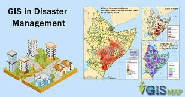

Here is the course cover image in a scaled size:

Following a calamity, GIS is instrumental in the assessment of the extent of damage and design of the recovery programs. Spatial comparison between pre- and post-disaster imagery helps to quantify effects on different sectors such as infrastructure, housing, and natural resources which in turn inform resource distribution about where efforts should be focused to guide reconstruction and ensure effective allocation. In addition, GIS fosters sustainability of resilience programs through allowing integration of a wide range of disaster management initiatives based on historical information plus future trends obtained from the analysis: thus communities can adopt more structural resilient systems and land use practices aimed at curbing vulnerability to similar disasters in future years.
Summary of Topics
| Section | Topic |
|---|---|
| Section 1 | Risk Assessment and Hazard Mapping |
| Section 2 | Real-time Monitoring and Emergency Response |
| Section 3 | Post-disaster Recovery and Resilience Building |